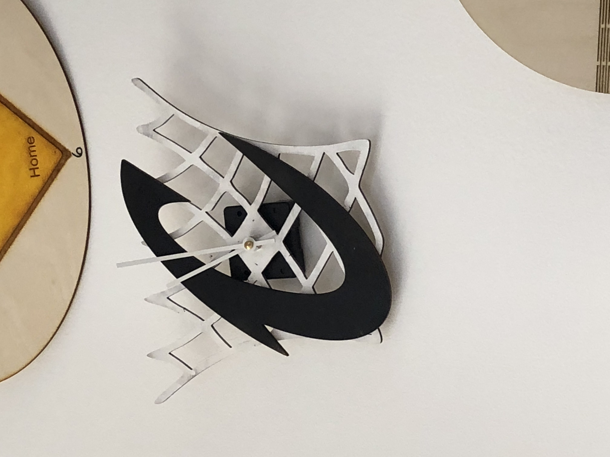

Our challenge was to create a clock using wood and a laser cutter. I chose to do a cavs theme clock. I used correl draw to import images and design. I imported both an image of a basketballl net and a Cavs symbol. Then I touvhed them up and sent it to the printer. Once it was done, I spray painted the net white and the Cavs symbol black and super glued the pieces together.
I also worked on some other things. I made a phone back by creating a monogram and then moving it to correl draw and printing on it. I used the same monogram for the water bottle. I had to fill the water up though to get it to print correctly.
